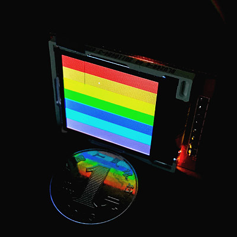
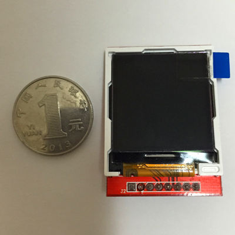
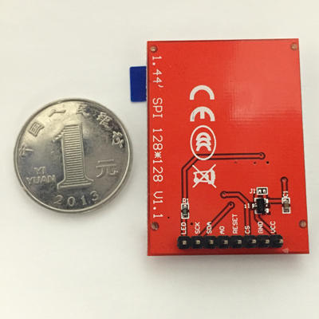
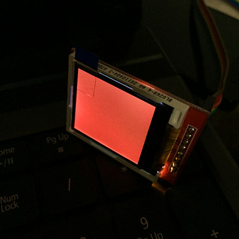
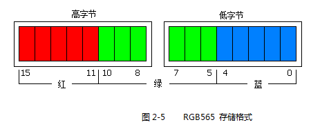
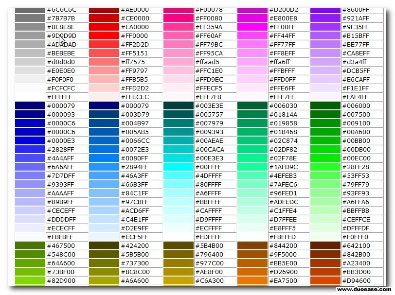

树莓派GPIO入门11-驱动液晶屏幕（一）
本系列将驱动一块1.44”的128x128像素的彩色液晶屏幕。
并分几个篇幅分别讲述如何使其显示色块，英文数字，汉字以及图片。
本文是系列的第一篇，目标是点亮屏幕并显示指定色块。
最终效果

硬件
- 1.44英寸 spi接口 128x128液晶屏幕 X 1（淘宝10-20元）


先上代码看效果
这次直接上代码，大家自己复制代码保存为py文件。文件名无所谓。1
2
3
4
5
6
7
8
9
10
11
12
13
14
15
16
17
18
19
20
21
22
23
24
25
26
27
28
29
30
31
32
33
34
35
36
37
38
39
40
41
42
43
44
45
46
47
48
49
50
51
52
53
54
55
56
57
58
59
60
61
62
63
64
65
66
67
68
69
70
71
72
73
74
75
76
77
78
79
80
81
82
83
84
85
86
87
88
89
90
91
92
93
94
95
96
97
98
99
100
101
102
103
104
105
106
107
108
109
110
111
112
113
114
115
116
117
118
119
120
121
122
123
124
125
126
127
128
129
130
131
132
133
134
135
136
137
138
139
140
141
142
143
144
145
146
147
148
149
150
151
152
153
154
155
156
157#!/usr/bin/env python
import RPi.GPIO as GPIO
import time
cs=23 # 片选
rs=17 # 数据 / 命令 切换
sda=13 # 数据
scl=19 # 时钟
reset=27 # 复位
# 传输byte
def setByteData(data):
# print ""
# print "S-----------setByte---------------:", hex(data)
for bit in range(0,8):
# 传入的数字从高位到低位依次判断是否为1，若为1则设置高电平，否则设置低电平
# 判断的方法是先向左移位，把要判断的位移动到最高位然后跟0x80（1000 0000）相与，
# 如果结果仍然是0x80（1000 0000）就表示最高位是1，否则最高位就是0
if ((data<<bit) & 0x80 == 0x80):
setBitData(True)
# print "1",
else:
setBitData(False)
# print "0",
# print ""
# print "E-----------setByte---------------"
def setBitData(data):
GPIO.output(scl, False)
GPIO.output(sda, data)
GPIO.output(scl, True)
def write_command(cmd):
GPIO.output(cs, False)
GPIO.output(rs, False)
setByteData(cmd)
GPIO.output(cs, True)
def write_data(data):
GPIO.output(cs, False)
GPIO.output(rs, True)
setByteData(data)
GPIO.output(cs, True)
def write_data_16bit(dataH, dataL):
write_data(dataH)
write_data(dataL)
def lcd_reset():
GPIO.output(reset, False)
time.sleep(0.1)
GPIO.output(reset, True)
time.sleep(0.1)
def lcd_init():
lcd_reset()
write_command(0x11) # Exit Sleep
time.sleep(0.02)
write_command(0x26) # Set Default Gamma
write_data(0x04)
write_command(0xB1)# Set Frame Rate
write_data(0x0e)
write_data(0x10)
write_command(0xC0) # Set VRH1[4:0] & VC[2:0] for VCI1 & GVDD
write_data(0x08)
write_data(0x00)
write_command(0xC1) # Set BT[2:0] for AVDD & VCL & VGH & VGL
write_data(0x05)
write_command(0xC5) # Set VMH[6:0] & VML[6:0] for VOMH & VCOML
write_data(0x38)
write_data(0x40)
write_command(0x3a) # Set Color Format
write_data(0x05)
write_command(0x36) # RGB
write_data(0xc8)
write_command(0x2A) # Set Column Address
write_data(0x00)
write_data(0x00)
write_data(0x00)
write_data(0x7F)
write_command(0x2B) # Set Page Address
write_data(0x00)
write_data(0x00)
write_data(0x00)
write_data(0x7F)
write_command(0xB4)
write_data(0x00)
write_command(0xf2) # Enable Gamma bit
write_data(0x01)
write_command(0xE0)
write_data(0x3f)# p1
write_data(0x22)# p2
write_data(0x20)# p3
write_data(0x30)# p4
write_data(0x29)# p5
write_data(0x0c)# p6
write_data(0x4e)# p7
write_data(0xb7)# p8
write_data(0x3c)# p9
write_data(0x19)# p10
write_data(0x22)# p11
write_data(0x1e)# p12
write_data(0x02)# p13
write_data(0x01)# p14
write_data(0x00)# p15
write_command(0xE1)
write_data(0x00)# p1
write_data(0x1b)# p2
write_data(0x1f)# p3
write_data(0x0f)# p4
write_data(0x16)# p5
write_data(0x13)# p6
write_data(0x31)# p7
write_data(0x84)# p8
write_data(0x43)# p9
write_data(0x06)# p10
write_data(0x1d)# p11
write_data(0x21)# p12
write_data(0x3d)# p13
write_data(0x3e)# p14
write_data(0x3f)# p15
write_command(0x29) # Display On
write_command(0x2C)
def show_single_color(DH,DL):
for i in xrange(0,128):
for j in xrange(0,128):
write_data_16bit(DH,DL)
try:
GPIO.setmode(GPIO.BCM)
GPIO.setup(cs, GPIO.OUT)
GPIO.setup(rs, GPIO.OUT)
GPIO.setup(sda, GPIO.OUT)
GPIO.setup(scl, GPIO.OUT)
GPIO.setup(reset, GPIO.OUT)
lcd_init()
write_command(0x2C)
show_single_color(0xf8,0x00) # 红色背景
while True:
pass
except KeyboardInterrupt:
pass
# 清理GPIO口
GPIO.cleanup()
然后，按下表连接液晶屏和树莓派。（连接完以后屏幕应该是白屏状态）
| 液晶屏 | 树莓派 |
|---|---|
| LCD | 3.3V(不可以是5V！！) |
| SCK | GPIO19 |
| SDA | GPIO13 |
| AO | GPIO17 |
| RESET | GPIO27 |
| CS | GPIO23 |
| GND | GND |
| VCC | 3.3V(不可以是5V！！) |
然后，执行！1
sudo python prog.py
不出意外，你应该能看到屏幕被慢慢地扫描刷新成红屏了！！！

原理说明
想要跟硬件通信，给硬件发送指令，首先要搞清楚硬件的通信协议。
对于屏幕来说，其通信协议是由屏幕的主控IC芯片决定的，不同的主控IC芯片有不同的通信协议，也就是发送指令的方法。
不过，即使是不同的屏幕，也有可能使用同一款（或同系列）主控IC。
所以拿到一块屏幕首先要搞清楚这块屏幕使用的是哪种主控IC，谷歌，百度都可以，最方便的是问卖家。。。
本文使用的屏幕的主控IC是ST7735S，文末提供数据手册下载。
简单来说，通过SDA数据引脚和SCLK时钟引脚串行输入（从第一篇学习过来的一定不陌生）不同的指令数据就可以控制屏幕的输出。
指令数据分成两种，指令种类数据和指令内容数据。每次发送指令都是先发送指令种类再发送指令内容。
有点拗口，比如说我告诉屏幕“接下来我要改变屏幕颜色啦”，接着你发送了一串数字，硬件接收到这串数字后会作为一个颜色值应用在屏幕上。如果你告诉屏幕“接下来我要改变屏幕的亮度啦”，接着你又发送了一串数字，这次硬件接收到这一串数字后会作为亮度值应用在屏幕上。这么说你再不明白我就。。。。
再回过头来看代码：1
2
3
4
5
6
7
8
9
10
11def write_command(cmd):
GPIO.output(cs, False)
GPIO.output(rs, False)
setByteData(cmd)
GPIO.output(cs, True)
def write_data(data):
GPIO.output(cs, False)
GPIO.output(rs, True)
setByteData(data)
GPIO.output(cs, True)
上面这两个函数，一个用来发送指令种类，一个用来发送指令内容。区别仅仅在于rs引脚的电平高低不同。
另外，屏幕初始化函数lcd_init()里有一堆命令，天书一般，光是看就晕了。
别晕，这些代码大多只用执行一遍，最开始不必关心，照葫芦画瓢即可。
下面是你需要注意的关键指令种类和内容：
- 0x2A：指定绘图指针的列起始和结束地址（X坐标范围）
指令内容是4个字节的32位数据，从高位到低位分别是
起始X坐标高8位
起始X坐标低8位
结束X坐标高8位
结束X坐标低8位 - 0x2B：指定绘图指针的行起始和结束地址（Y坐标范围）
指令内容是4个字节的32位数据，从高位到低位分别是
起始Y坐标高8位
起始Y坐标低8位
结束Y坐标高8位
结束Y坐标低8位
下面的代码设定的范围是（0，0）-（127， 127），也就是全屏幕。1
2
3
4
5
6
7
8
9
10write_command(0x2A) # Set Column Address
write_data(0x00)
write_data(0x00)
write_data(0x00)
write_data(0x7F)
write_command(0x2B) # Set Page Address
write_data(0x00)
write_data(0x00)
write_data(0x00)
write_data(0x7F)
- 0x2C：在当前指针位置（X,Y坐标）绘制指定颜色的像素点
指令内容是2个字节的颜色数据。
每次执行完一个像素点的绘色以后，硬件会根据设定好的开始坐标和结束坐标自动移动绘图指针到下一个位置，遇到边界自动换行。
下面的代码的意义是连续绘制128 X 128个像素点，并且颜色为红色（#0xF800）。1
2
3
4
5
6
7
8write_command(0x2C)
show_single_color(0xf8,0x00) # 红色背景
...
...
def show_single_color(DH,DL):
for i in xrange(0,128):
for j in xrange(0,128):
write_data_16bit(DH,DL)
这就是本文示例代码显示红屏的原理。
其实只要学会了这3个命令的使用，基本上啥都能显示了，无非是效率问题。给大家留个作业，自己完成本文开头的最终效果彩带。
本节到此结束，下一节我们继续讨论。
关于颜色的补充说明
有人问博主0xF800是什么鬼？红色难道不应该是0xFF0000吗？
这里就引出一个RGB颜色数据格式的问题，0xF800和0xFF0000都是红色，只是格式不一样。
我们常见的0xFF0000这种格式一共是24位，红绿蓝各用8位表示，所以红色就是FF,00,00。
而本文使用的是另一种叫RGB565的格式，这种格式一共只有16位，红绿蓝分别使用5位6位5位。

根据上图，红色应该是11111000 00000000，也就是0xF800。
在网上没找到RGB565的颜色表，大家有时间自己找一下，或者写个函数转换一下。本文不做讨论。
下面只给出标准24位颜色代码表供参考，不能直接使用哦，要转换要转换要转换，说了三遍，很重要。

其实，这款彩屏支持以下3种颜色格式
4k Colors, RGB 4,4,4
3AH=“03h”1
2write_command(0x3a)
write_data(0x03)65k Colors, RGB 5,6,5
3AH=“05h”（本文使用的格式）1
2write_command(0x3a)
write_data(0x05)262k Colors, RGB 6,6,6
3AH=“06h”1
2write_command(0x3a)
write_data(0x06)
详细内容请自己参考文档（9.8 Data Color Coding）。